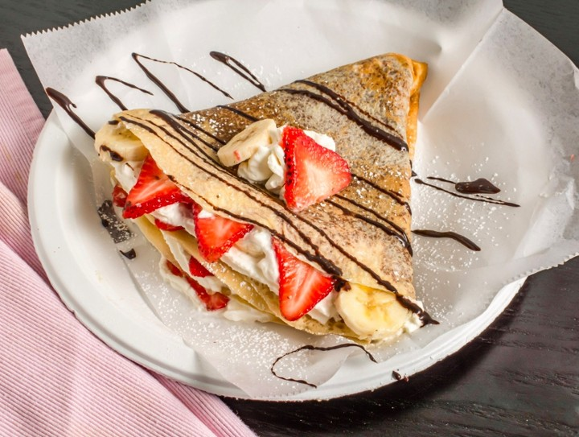

RECIPE FOR CREPES

Need something that'll satisfy your sweet cravings? worry not!
indulge in the perfect sweet treat using this easy yet delightful recipe of crepes
you can never go wrong with some crepes, espcially when they're
topped with some chocolate, whipped cream, and bananas on the side. yumm!
ingredients
- flour - 1 cup
- 3 eggs
- a pinch of salt
- milk - 400ml
- oil - 1tbsp
- sugar - 1/4 cup
- a big chocolate bar of your choice
- cream - 170g
- bananas
- strawberries
method
- add the flour, eggs, salt, milk, oil and sugar in a bowl
- mix them well till there are no lumps. your batter is ready!
- take a pan and add a very small amount of oil and spread it evenly on the pan
- keep the pan on medium heat and pour a small amount of batter on it
- flip it and put it onto a plate when ready
- heat the chocolate with the cream and mix well
- chop the bananas and strawberries
- spread the chocolate+cream mix onto the crepe
- put the chopped bananas and strawberries on it
- fold the crepe however you like, then drizzle the chocolate cream on top
enjoy!!